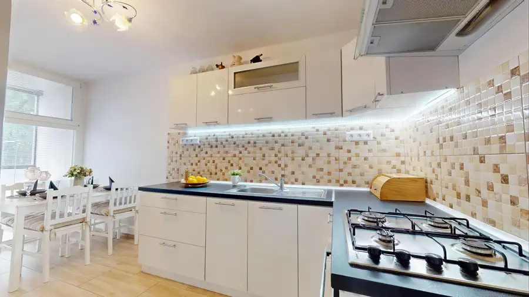
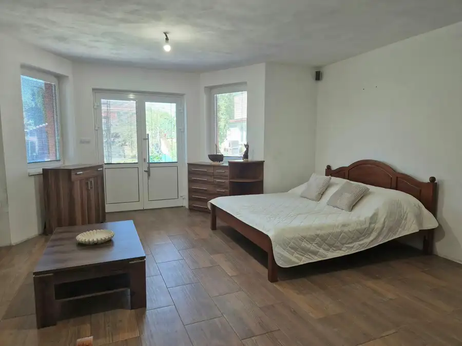
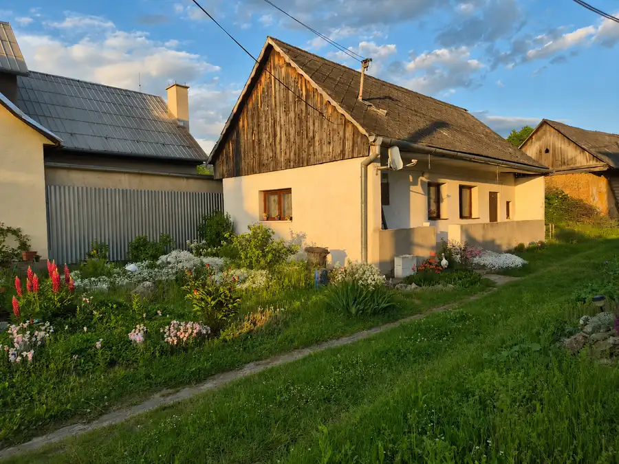

Na predaj zariadený 1-izbový byt s balkónom v Dubnici nad Váhom
Dubnica nad Váhom
- Dispozícia1-izbový
- Plocha32 m²
- Poschodie2. z 4
- StavČiastočná rekonštrukcia
- VlastníctvoOsobné
- Energetická triedaC
O nehnuteľnosti
Na ulici Kpt. Nálepku ponúkame na predaj zariadený 1-izbový byt so samostatnou izbou, oddelenou kuchyňou a balkónom, ktorý sa tiahne pozdĺž oboch miestností.Čo vás na byte poteší• 32 m² s prakticky oddelenou obytnou izbou a kuchyňou• 2. poschodie zo 4• balkón s otvoreným výhľadom, prístupný z kuchyne• náklady 170€• predaj aj so zariadenímV byte nájdete vstupnú chodbu s úložným priestorom, kuchyňu s miestom na stolovanie aj oddych, kúpeľňu so sprchovacím kútom a samostatnú toaletu. Kuchyňa je vybavená linkou a spotrebičmi.Na balkóne si môžete vychutnať rannú kávu alebo si po dni jednoducho oddýchnuť pri západe slnka.Potraviny a reštaurácia v susedstve, ďalšie obchody, služby a zastávky dopravy nájdete v blízkom okolí. Pri dome je mestské parkovanie. Výhodou je aj dostupnosť centra, železnice a diaľnice D1.Ak hľadáte zariadený byt s oddelenou izbou a kuchyňou, rada vám ho predstavím na osobnej obhliadke.Alena Ondričková0911 142 521alena.ondrickova@targetreal.sk
Parametre
| Cena vrátane energií | Nie |
|---|---|
| Druh | 1 izbový byt |
| Dátum zverejnenia | 1. 10. 2026 |
| Energetický certifikát budovy | C |
| Energie | 170 |
| Orientácia | Severozápadná |
| Podlažie | 2 |
| Počet izieb / miestností | 1 |
| Počet nadzemných podlaží | 4 |
| Stav nehnuteľnosti | Čiastočná rekonštrukcia |
| Typ | Predaj |
| Typ konštrukcie | Panelová |
| Vlastníctvo | Osobné |
| Vybavenie | Balkón, Verejné parkovanie |
| Úžitková plocha | 32 m² |
Kde to je


Mohlo by Vás zaujímať

BytNové10 160 000 €TARGETreal| Na predaj zrekonštruovaný 2-izbový byt - Trenčín – Sihoť Trenčín 2-izbový50 m²1. podlažie Ponúkame na predaj zrekonštruovaný 2-izbový byt s výmerou 50 m² vo vyhľadávanej lokalite Trenčín – Sihoť, Gagarinova ulica. Nachádza na 1. poschodí z…
DomNové10 210 000 €Nová cena - TARGETreal ponúka na predaj – rodinný dom v obci Košeca Košeca 254 m² Hľadáte pokojné bývanie, ktoré môžete prispôsobiť potrebám svojej rodiny? V tichej slepej ulici obce Košeca, ponúkame na predaj rozostavaný tehlový…
DomNové10 75 000 €Starý rodinný dom v centre obce Košeca – investičná príležitosť Košeca 89 m² Ponúkame na predaj starší rodinný dom situovaný priamo v centre obce Košeca.Nehnuteľnosť sa nachádza na pozemku s výbornou dostupnosťou a v obci s…